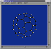

Rasmol, another 3D viewer
Rasmol is a free molecule viewer widely used in chemistry. It is rich in features and fast. CaGe supports Rasmol for its popularity and speed, but there are two problems we have with the program: we can't be fully certain that Rasmol can actually run, and there is no guarantee that Rasmol will show a molecule exactly as CaGe wants to show it.
-
To verify that Rasmol is installed and usable, CaGe starts the simple command "rasmol", writes a few basic Rasmol commands to it through a pipe (which won't cause a window to open), and then checks if the command has terminated successfully. This happens before CaGe dares to offer Rasmol to you as a viewer option. But it isn't actually a complete test that Rasmol will successfully run on the system. Most versions of Rasmol for the X Windows system are compiled for a particular display bit depth, and on the wrong kind of display Rasmol will accept CaGe's testing commands, but it will refuse to open a display window when asked to actually display a molecule.
-
Rasmol is quite "intelligent" in terms of chemistry. Given a detailed representation of a molecule, it can display it using many different chemical models and viewing modes. But there is no way of convincing Rasmol that it should not use its intelligence to second-guess where a molecule has a bond and where it doesn't. We want to display molecules that are originally graphs, and because of that context we want our graphs' edges to be faithfully shown by our viewers, with no edges left out and none added.
Since there is this uncertainty about Rasmol, CaGe shows a warning message when the Rasmol viewer is requested for the first time in a CaGe session. Click "Ok" in the message box and CaGe will continue.
This screenshot shows Rasmol displaying the "buckyball" C60
fullerene as generated by CaGe. As with Jmol, you can drag the mouse to
rotate the molecule around its center, Shift-drag to zoom it, and Control-drag
to translate it. You can use the menus as well, changing into different
display modes. There are some menu items that cause Rasmol to ask for
additional information. Rasmol does this by writing a prompt string to
its output. CaGe checks this output at regular intervals (the length of
these is set in the configuration file CaGe.ini).
If a question is found, CaGe will present it to the user in a small dialog
window. A response must be given (Rasmol is waiting for one on its input),
and you give it by filling in the dialog's text field and pressing Return.
To cancel the interaction, don't type anything and press Return, or close
the dialog window.
You can reset Rasmol's display options by viewing a different graph, or by redisplaying the current one (click into the "view/goto" field in the results window, don't change the number, and press Return).

| Viewing
results |
||
| the
text viewer |
||